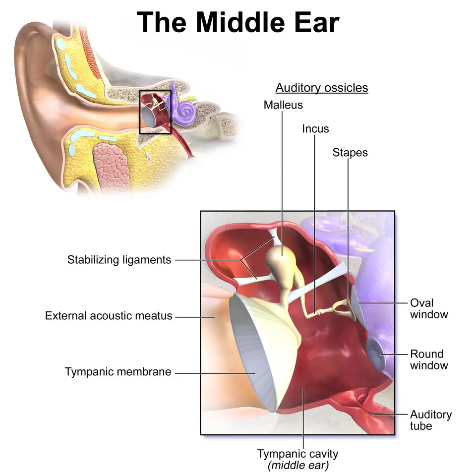
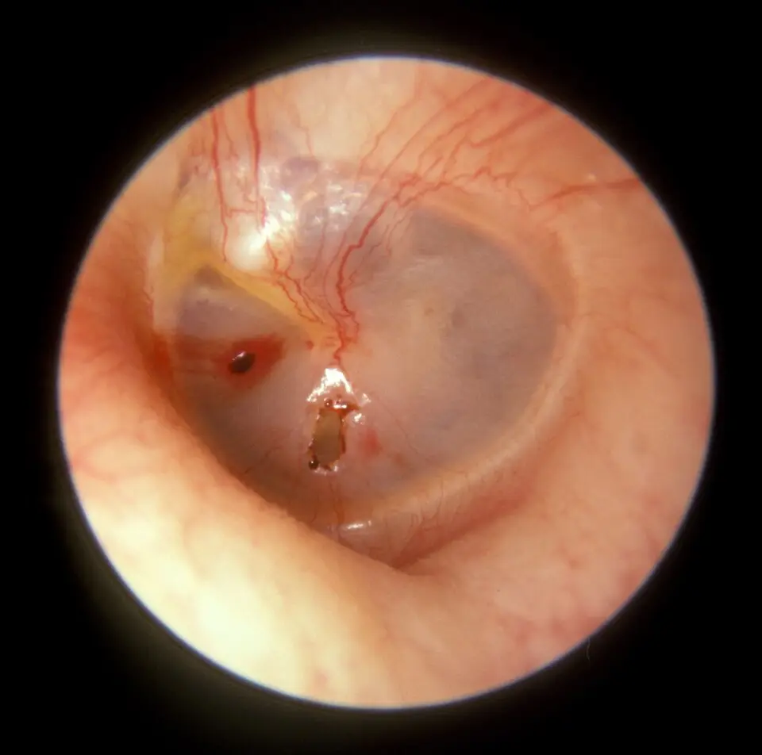
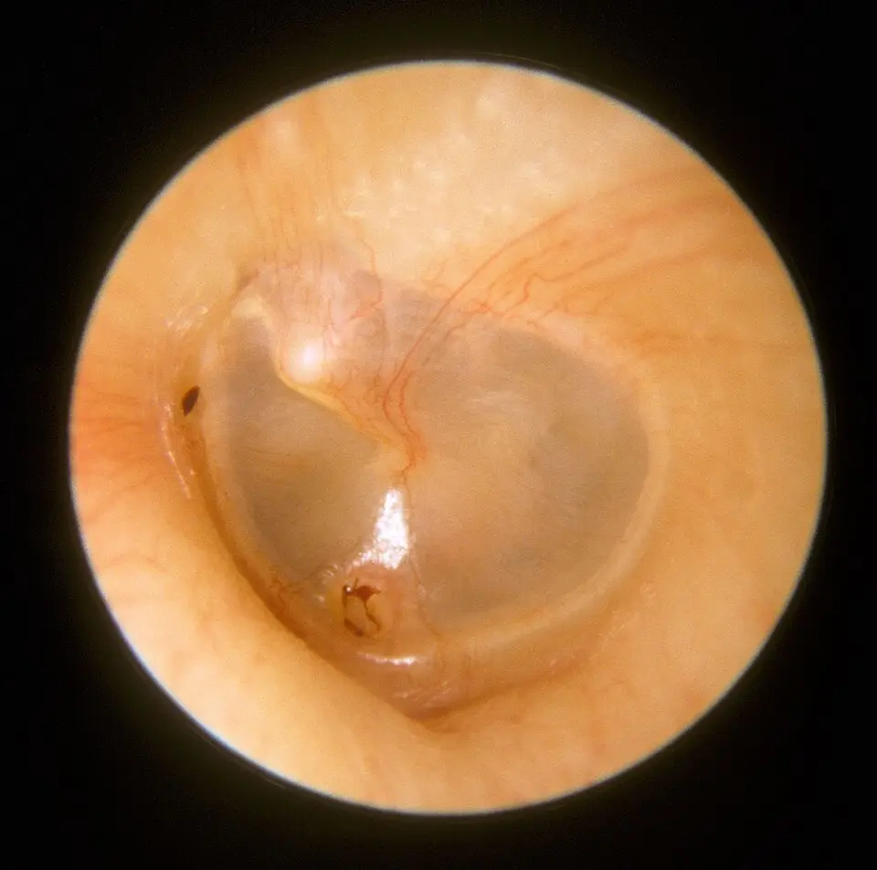

DX.7 — Perforation tympanique traumatique
Une gifle, une explosion, un coton-tige ou un accident de plongée déchirent le tympan ; l'oreille saigne un peu, entend moins et siffleS1. La plupart de ces perforations se ferment seules si l'oreille reste au sec, mais un vertige ou une paralysie faciale signalent une lésion plus profondeS4S7.
1. Définition
Les Hôpitaux universitaires de Genève (HUG) définissent la perforation tympanique traumatique comme un trou ou une déchirure du tympan provoqués par un traumatismeS1. Ce traumatisme peut être aquatique, sportif, explosif ou violent, par exemple une gifle reçue sur l'oreilleS1. La perforation est aiguë et isolée lorsqu'aucune lésion de l'oreille moyenne ou interne ne l'accompagneS6.
2. Épidémiologie (Suisse, puis Europe)
Les HUG indiquent que près de deux tiers des perforations traumatiques se referment d'elles-mêmes, ce qui donne le repère suisse du pronosticS1. La plus grande série européenne lue vient de Munich, où 198 patients ont été suivis dans la plus grande clinique ORL (oto-rhino-laryngologie) universitaire d'AllemagneS5. Le tableau des chiffres, les mécanismes selon le sexe et l'histoire naturelle complètent ce repère.
Chiffres suisses et européens
| Donnée | Valeur | Lieu et année | Source |
|---|---|---|---|
| Fermeture spontanée | Près de deux tiers | Genève, page des HUG lue en 2026 | S1 |
| Fermeture sous surveillance, 133 patients et 137 perforations | 97 % ; délai médian de 3 à 4 semaines | Danemark, 2015 | S4 |
| Âge moyen et sexe, 198 patients | 29,2 ans ; 62 % d'hommes | Allemagne, 2012 | S5 |
| Côté atteint | Gauche 58,5 % ; droit 41,5 % | Allemagne, 2012 | S5 |
| Revue systématique, 24 études et 2796 oreilles | Fermeture de 67 à 97 % sans geste | International, 2022 | S6 |
Les chiffres divergent parce que les populations diffèrent : la série danoise suit des perforations sous surveillance active, alors que la page des HUG s'adresse au public sans préciser sa populationS1S4. La taille de la perforation reste le seul facteur qui prolongeait le délai de fermeture au DanemarkS4.
Mécanismes selon le sexe, série de Munich
| Mécanisme | Hommes | Femmes |
|---|---|---|
| Coup sur l'oreille | 44,7 % | 46,7 % S5 |
| Collision | 23,6 % | 14,7 % S5 |
| Coton-tige introduit par accident | 13,8 % | 25,3 % S5 |
Le coup sur l'oreille domine dans les deux sexes, tandis que le coton-tige touche environ deux fois plus souvent les femmesS5. Les HUG ajoutent la plongée, les sports, les explosions et les vagues parmi les circonstances fréquentesS1.
Histoire naturelle
Une petite perforation a une forte probabilité de se fermer en trois à quatre semaines, ce qui justifie l'attente surveillée selon l'équipe danoiseS4. Une grande perforation sans complication peut en revanche justifier une réparation précoce, selon les besoins du patientS4.
Lorsque la fermeture ne se fait pas, une otite moyenne chronique s'installe et la tympanoplastie devient nécessaire, selon les HUGS1. Une perforation persistante expose aux otites et à une baisse auditive de transmission, d'où l'intérêt d'un contrôle jusqu'à la fermetureS7S8.
3. Physiopathologie
Les signes découlent de la base anatomique : le tympan sépare le conduit de la caisse et transmet la vibration à la chaîne des osseletsS19. Une hausse brutale de la pression d'air dans le conduit, comme lors d'une gifle, le déchire ; c'est la perforation par effet de souffleS18. La cascade lésionnelle et le tableau de corrélation relient chaque mécanisme au signe, à l'examen et au geste.
Base à connaître : le tympan et la caisse
Le support des HUG décrit au tympan une pars tensa, une pars flaccida, le manche et la courte apophyse du marteau, l'ombilic et le triangle lumineuxS3. L'anneau fibro-cartilagineux encadre la membrane, et la branche descendante de l'enclume se devine parfois derrière elleS3.
Derrière le tympan, la caisse contient marteau, enclume et étrier ; l'étrier repose sur la fenêtre ovale, qui ouvre sur l'oreille interneS19. La trompe auditive aère cette caisse, de sorte qu'un tympan ouvert laisse passer l'eau et les germes du conduit vers l'oreille moyenneS19S7.
Cette anatomie explique la règle clinique : une perforation isolée ne touche que la conduction aérienne, alors qu'un vertige ou une surdité de perception signent une atteinte au-delà de la membraneS3S7.
Oreille moyenne, schéma en couleur de Blausen. Ce schéma publié montre la caisse du tympan agrandie, avec le tympan à gauche et l'oreille interne à droite.

Lisez d'abord seul ce cliché (oreille moyenne, schéma en couleur de blausen) : cherchez vous-même le signe.
La copie annotée (oreille moyenne, schéma en couleur de blausen) porte les repères numérotés décrits ci-dessous.
- 1. Le tympan est une membrane mince, tendue en cône, qui transmet la vibration au marteau.S19
- 2. Le marteau, l’enclume et l’étrier forment la chaîne qui amplifie le son jusqu’à la fenêtre ovale.S19
- 3. L’étrier s’appuie sur la fenêtre ovale, porte de l’oreille interne ; un vertige après un objet pointu fait craindre une atteinte à ce niveau.S19
- 4. La trompe auditive aère la caisse ; une hausse brutale de pression dans le conduit, comme lors d’une gifle, déchire pourtant le tympan.S19
- Le schéma agrandit la caisse ; ses proportions ne servent pas à mesurer une perforation.
- Le schéma ne montre pas le nerf facial, qui chemine pourtant dans la paroi de la caisse.
Ce que l'image décide. Une perforation isolée touche seulement la membrane, alors qu’un vertige ou une paralysie faciale signalent une lésion au-delà et imposent l’ORL en urgence.

Cascade lésionnelle en quatre temps
Amorce. Trois forces déchirent la membrane : la surpression d'air d'une gifle ou d'une explosion, la différence de pression de la plongée, et la pénétration d'un objet pointuS1S5. À Munich, coups, collisions, barotraumatismes et objets pointus atteignaient surtout la partie inférieure du tympanS5.
Développement. La déchirure saigne peu et ses bords restent irréguliers, ce que montre l'otoscopie dans les premiers joursS18. Les perforations les plus graves, subtotales, provenaient d'explosions, de gouttes de soudure et de cotons-tiges introduits trop loinS5.
Installation. Le défaut réduit la surface vibrante, ce qui crée une surdité de transmission ; l'oreille moyenne ouverte devient vulnérable à l'eau et à l'infectionS7. Une lésion de l'oreille interne associée se traduit par une hausse des seuils osseux sur les fréquences aiguësS5.
Maintien ou guérison : les bords se remanient et le défaut se réduit ; trois semaines après, les bords apparaissent surélevés et la perforation plus petiteS20. Une infection ou une grande taille freinent cette fermeture, et le pronostic dépend de la taille, de la cause et de l'infectionS8.
Corrélation : perturbation, exploration, thérapeutique
| Perturbation | Exploration qui la montre | Thérapeutique et mécanisme |
|---|---|---|
| Déchirure de la membrane | Otoscopie, puis otomicroscopie de l'ORL | Oreille au sec ; cicatrisation spontanée des bords S4 |
| Perte de surface vibrante | Diapason, audiométrie tonale | Contrôle de l'audition jusqu'à la fermeture S5 |
| Atteinte de l'oreille interne | Audiométrie : seuils osseux aigus élevés ; vertige | Avis ORL urgent S7 |
| Contamination de la caisse | Otorrhée purulente secondaire | Aspiration sous microscope par l'ORL S9 |
| Perforation persistante | Otoscopie après plusieurs semaines | Tympanoplastie, qui greffe un tissu du patient S1 |
La colonne de droite montre pourquoi la conduite reste d'abord conservatrice : la membrane se répare seule tant qu'on ne lui ajoute ni eau, ni germe, ni goutte toxiqueS7S3.
4. Démarche diagnostique
Le médecin écarte d'abord la fracture du rocher et la fuite de liquide cérébrospinal, car elles changent la prise en charge et relèvent d'une équipe multidisciplinaireS2. Il recherche ensuite une atteinte de l'oreille interne ou du nerf facial, puis confirme la perforation isolée à l'otoscopieS7. Les diagnostics discriminants se séparent par le contexte et quelques signes simples, et l'erreur classique du débutant montre le piège le plus coûteux.
Diagnostics discriminants
| Diagnostic | Élément qui tranche | Piège | Conduite si positif |
|---|---|---|---|
| Fracture du rocher | Traumatisme crânien, surdité, vertige, paralysie faciale | Ne regarder que l'oreille chez un blessé grave | Fonctions vitales, imagerie, équipe multidisciplinaire S2 |
| Fuite de liquide cérébrospinal (DX.10) | Écoulement clair après traumatisme crânien | Le confondre avec un saignement banal | Urgence ; aucune instillation S2 |
| Otite moyenne aiguë perforée (DX.2) | Fièvre et otalgie après un rhume, sans traumatisme | Attribuer au traumatisme une perforation infectieuse | Traitement de l'otite S7 |
| Corps étranger (DX.6) | Objet visible dans le conduit | Irriguer avant d'avoir vu le tympan | Retrait adapté, sans eau S10 |
| Perforation chronique ancienne | Bords lisses, absence de traumatisme récent | La prendre pour une lésion fraîche | Avis ORL programmé (déduction clinique, hors source) |
La perforation infectieuse de l'otite moyenne guérit avec le traitement de l'otite, alors que la perforation chronique liée à une otite chronique ou à un cholestéatome ne guérit généralement pas sans chirurgieS7.
Erreur classique du débutant, pas à pas
Situation. Un adulte consulte après une gifle : l'oreille est douloureuse, le conduit contient un peu de sang, et le tympan reste mal visibleS1. Le débutant lave le conduit pour mieux voir, puis prescrit des gouttes à la néomycine contre la douleur.
Mécanisme. L'eau du lavage passe par la déchirure vers la caisse, alors qu'ENT (Ear, Nose and Throat) UK (Royaume-Uni) contre-indique l'irrigation dès qu'une perforation est soupçonnéeS10. La néomycine de Panotile est ototoxique, et son AIPS (Arzneimittel-Informations-Publikations-System, base suisse des informations professionnelles) l'interdit en cas de perforation à cause du risque de surditéS12.
Signe et examen : le contexte de gifle suffit à soupçonner la perforation ; le médecin regarde sans laver, et l'ORL nettoie au besoin par aspiration sous microscopeS1S3. Décision. L'oreille reste sèche, la douleur se traite par voie orale, et aucune goutte n'est instillée avant l'avis de l'ORLS9.
5. Anamnèse ciblée et drapeaux rouges
L'anamnèse précise le mécanisme exact, car un objet pointu, une explosion ou un traumatisme crânien n'ont pas le même pronostic qu'une gifleS5S2. Les symptômes se caractérisent un par un, et les drapeaux rouges dictent chacun une action.
Questions à poser, et pourquoi
- Le médecin fait décrire le traumatisme, car une gifle, un plongeon ou une vague ne lèsent pas l'oreille comme un objet pointu ou une explosionS1S5.
- Il demande si un coton-tige ou un autre objet a été introduit, parce qu'il peut produire une perforation subtotaleS5.
- Il recherche une perte de connaissance ou un choc violent de la tête, car la fracture du rocher accompagne les traumatismes crâniens importantsS2.
- Il demande si de l'eau, des gouttes ou un lavage ont déjà touché l'oreille, car ils exposent la caisse ouverte à l'infection et aux produits ototoxiquesS7S12.
- Il fait préciser l'état antérieur de l'oreille, pour séparer une perforation fraîche d'une perforation chronique déjà connueS7.
- Il note l'heure, le lieu et l'auteur éventuel du coup, car ces données ont une portée médicolégale selon l'équipe de MunichS5.
Symptômes caractérisés : typiques ou non
| Symptôme | Caractères | Typique ? | Pourquoi |
|---|---|---|---|
| Otalgie | Forte, soudaine, au moment du traumatisme | Oui | La déchirure brutale explique la douleur soudaine S1 |
| Baisse d'audition | Immédiate, unilatérale | Oui | La surface vibrante diminue S1S7 |
| Acouphène | Bruit fantôme, fréquent au début | Oui, s'il régresse | Il touchait 30,8 % des patients au début et 2,0 % au contrôle S5 |
| Saignement | Peu abondant, au début | Oui | Les bords déchirés saignent S18 |
| Vertige | Après un saut dans l'eau froide ou une vague ; transitoire | Possible ; inquiétant s'il dure | Les HUG le décrivent surtout après un saut dans l'eau froide ; un vertige durable évoque une lésion profonde S1S7 |
| Écoulement purulent | Retardé de quelques jours | Non : complication | Des germes ont gagné la caisse ouverte S9 |
Le vertige touchait 8,1 % des patients de Munich à l'arrivée et aucun au contrôle, ce qui montre que le vertige transitoire guérit le plus souventS5.
Drapeaux rouges et action immédiate
| Drapeau rouge | Signification | Action immédiate |
|---|---|---|
| Vertige persistant | Atteinte de l'oreille interne | Avis ORL urgent S7 |
| Paralysie faciale | Lésion du nerf facial ou fracture du rocher | Avis ORL urgent, imagerie S7S2 |
| Écoulement clair après choc crânien | Fuite de liquide cérébrospinal | Urgence ; aucune goutte ni lavage S2 |
| Douleur continue | Infection ou lésion profonde | Avis ORL S7 |
| Traumatisme crânien avec perte de connaissance | Fracture possible de la base du crâne | Bilan des fonctions vitales, puis imagerie S2 |
6. Examen physique ciblé, région par région
L'examen suit l'ordre utile au blessé : tête et face, conduit, tympan, puis audition et équilibreS2S3. Chaque étape cherche un signe précis, avec un geste simple et un piège connu.
Région 1 — Tête et face
Signe recherché. Le médecin cherche une asymétrie faciale, car une paralysie du nerf facial signe une lésion au-delà du tympanS7. Geste. Il fait fermer les yeux, plisser le front et montrer les dents, côté par côté.
Contexte grave. Après un traumatisme crânien, l'examen de l'oreille vient après la stabilisation des fonctions vitales, comme le précisent les HUG pour la fracture de la base du crâneS2. Piège. Un blessé comateux ne peut signaler ni surdité ni vertige ; l'imagerie et l'avis ORL compensent alors l'interrogatoireS2.
Région 2 — Conduit auditif externe
Normal. Le conduit est sec et sa peau intacteS3. Geste. Le médecin tire le pavillon vers le haut et l'arrière, puis introduit le spéculum sans pousser les caillotsS10.
Pathologique. Un peu de sang séché accompagne la perforation fraîche ; un écoulement clair abondant oriente en revanche vers une fuite de liquide cérébrospinalS18S2. Piège. Le caillot ne s'enlève jamais par lavage, car l'irrigation est contre-indiquée devant une perforation soupçonnéeS10.
Région 3 — Tympan : aspect de la perforation fraîche
Normal. Le tympan sain est gris, translucide, avec un triangle lumineux et le manche du marteau bien visiblesS3. Pathologique. La perforation traumatique fraîche est ovalaire ou en fente, à bords irréguliers et teintés de sang, souvent dans la partie inférieureS18S5.
Valeur. Le compte rendu précise le côté, le siège, la taille relative et l'aspect des bords, car la taille gouverne le délai de fermetureS4. Piège. Des bords lisses et sans sang évoquent plutôt une perforation ancienne (déduction clinique, hors source).
Perforation traumatique du tympan gauche, quatre jours après une gifle. Cette photographie d'otoscopie montre un tympan gauche, quatre jours après une gifle sur l'oreille.

Lisez d'abord seul ce cliché (perforation traumatique du tympan gauche, quatre jours après une gifle) : cherchez vous-même le signe.
La copie annotée (perforation traumatique du tympan gauche, quatre jours après une gifle) porte les repères numérotés décrits ci-dessous.
- 1. La perforation siège dans la partie inférieure du tympan ; ses bords sont irréguliers et teintés de sang.S18
- 2. Le manche du marteau reste visible et intact au-dessus de la perforation.S18
- 3. Une petite tache de sang marque la membrane voisine, témoin du traumatisme récent.S18
- 4. Le reste de la membrane garde sa transparence grise normale.S18
- Un caillot dans le conduit peut masquer une petite perforation ; le médecin ne l’enlève pas par lavage.
- L’image ne dit rien de la chaîne ossiculaire ni de l’oreille interne ; l’audiométrie le précise.
Ce que l'image décide. Une perforation propre, sans vertige ni paralysie faciale, se surveille oreille au sec, avec un contrôle otoscopique programmé.

Région 4 — Audition et équilibre
Geste. Le diapason de 442 Hz permet le Weber, qui latéralise le trouble, et le Rinne, qui compare conduction aérienne et osseuseS3. Attendu. Une perforation isolée donne une surdité de transmission : le Weber part vers l'oreille blessée et le Rinne y devient négatifS3.
Alarme. Un Weber qui part vers l'oreille saine suggère une surdité de perception, donc une atteinte de l'oreille interne qui impose l'ORLS3. Équilibre. Le médecin observe la marche et cherche un nystagmus, car un vertige qui persiste n'est plus un simple effet de l'eau froideS1.
7. Approche syndromique
La perforation traumatique s'exprime en trois syndromes, du plus fréquent au plus grave : perforation isolée, perforation compliquée d'infection, et perforation avec atteinte profondeS7S2. Le tableau des syndromes les décompose en signes, et les définitions donnent le geste et le mécanisme de chaque signe.
Syndromes 7.1 à 7.3
| Syndrome | Signes fonctionnels | Signes physiques |
|---|---|---|
| 7.1 Perforation isolée | Douleur brève, baisse d'audition, acouphène | Perforation à bords frais ; surdité de transmission S1 |
| 7.2 Perforation surinfectée | Écoulement sale, douleur qui reprend | Otorrhée purulente à travers la perforation S9 |
| 7.3 Atteinte profonde | Vertige durable, surdité marquée | Paralysie faciale, surdité de perception, écoulement clair S2 |
Le syndrome 7.1 se surveille au cabinet, le syndrome 7.2 demande une aspiration par l'ORL, et le syndrome 7.3 impose une prise en charge spécialisée immédiateS9S7.
Signes : définition, geste, mécanisme
| Signe | Définition | Geste | Mécanisme |
|---|---|---|---|
| Surdité de transmission | Baisse d'audition par atteinte de l'oreille externe ou moyenne | Weber latéralisé du côté atteint, Rinne négatif | Le tympan troué transmet moins la vibration S3 |
| Surdité de perception | Baisse d'audition par atteinte de la cochlée ou du nerf | Weber latéralisé vers l'oreille saine | Le traumatisme a atteint l'oreille interne S3 |
| Encoche audiométrique aiguë | Creux des seuils sur les hautes fréquences | Audiométrie tonale | Elle traduit une atteinte cochléaire associée ; elle concernait 18,0 % des patients de Munich S5 |
| Nystagmus | Mouvement oculaire rythmique involontaire | Observation du regard | Il traduit l'atteinte vestibulaire qui accompagne le vertige (déduction clinique, hors source) |
| Paralysie faciale périphérique | Atteinte de toute l'hémiface, front compris | Plisser le front, fermer les yeux | Le nerf facial traverse le rocher S2 |
8. Diagnostic positif et critères
Aucune société savante ne publie de critères chiffrés : le diagnostic repose sur la vue d'une perforation à bords frais, dans un contexte traumatique récentS1S18. La revue de Duek retient la notion de perforation aiguë et isolée, sans lésion associée, pour comparer surveillance et patchS6. Les éléments qui suffisent se distinguent de ceux qui trompent, et le constat initial fixe les données qui serviront au suivi.
Ce qui suffit, ce qui ne suffit pas
| Élément | Valeur | Raison |
|---|---|---|
| Perforation vue, bords frais, traumatisme récent | Suffit | L'aspect et le contexte concordent S18 |
| Douleur et sang après une gifle, tympan non vu | Ne suffit pas | Le conduit seul peut saigner ; l'otoscopie doit voir la membrane S3 |
| Perforation sans contexte traumatique | Oriente ailleurs | Otite aiguë ou chronique sont plus probables S7 |
| Vertige ou paralysie faciale associés | Exclut la forme isolée | La lésion dépasse la membrane S7 |
La classification utile au médecin de premier recours sépare donc la perforation isolée, qui se surveille, de la perforation compliquée, qui part chez l'ORLS7.
Constat initial : ce qu'il doit contenir
- Le constat précise la date, l'heure et le mécanisme rapporté, car l'équipe de Munich insiste sur la portée médicolégale de ces donnéesS5.
- Il indique le côté atteint ; le côté gauche représentait 58,5 % des perforations à MunichS5.
- Il décrit le siège, la taille relative et les bords de la perforation, car la taille prédit le délai de fermetureS4.
- Il consigne le diapason et, dès que possible, une audiométrie tonale de référenceS3S5.
- Il note la présence ou l'absence de vertige, d'acouphène et de paralysie faciale, qui séparent la forme isolée de la forme compliquéeS5S7.
- Il mentionne les lésions associées ; à Munich, elles ne concernaient que 1 % des casS5.
Une photographie d'otoscopie, quand elle est possible, documente l'aspect initial et facilite la comparaison au contrôle, comme le montrent les deux clichés de HawkeS18S20.
9. Examens complémentaires
9.a. L'examen de référence est clinique : l'ORL examine le tympan au microscope binoculaire, qui précise taille, bords et caisseS3. 9.b. En première intention, l'otoscopie et le diapason de 442 Hz suffisent au médecin de premier recoursS3. 9.c. Chez le blessé inconscient, l'imagerie remplace l'interrogatoire impossibleS2. 9.d. En deuxième intention, l'audiométrie tonale mesure la perte et sert de référence pour le suiviS5.
Otoscopie et otomicroscopie
Indication. Tout traumatisme de l'oreille suivi de douleur, de baisse d'audition ou de saignement justifie une otoscopie le jour mêmeS1. Prescription. Le médecin doit regarder sans laver ; l'ORL aspire au besoin les caillots sous microscopeS3.
| Résultat | Signification | Conduite |
|---|---|---|
| Petite perforation à bords frais | Forte chance de fermeture en 3 à 4 semaines | Surveillance, oreille au sec S4 |
| Grande perforation, subtotale | Fermeture plus lente et moins sûre | Avis ORL ; réparation précoce discutée S4 |
| Perforation avec pus | Surinfection de la caisse | Aspiration par l'ORL S9 |
| Écoulement clair | Fuite de liquide cérébrospinal possible | Urgence, voir le DX.10 S2 |
Piège. Le tympan d'un blessé doit être vu en entier ; une otoscopie gênée par le sang conduit à l'ORL plutôt qu'à un lavageS10.
Audiométrie tonale
Indication. L'audiométrie documente la perte initiale, recherche une atteinte de l'oreille interne et fournit la référence médicolégaleS5. Résultat attendu. La perforation isolée donne un écart entre conduction aérienne et osseuse, signe de transmissionS3.
Interprétation. À Munich, les seuils osseux de l'oreille blessée étaient plus élevés sur les aigus, mais cette différence disparaissait au contrôleS5. Une encoche aiguë concernait 18,0 % des patients sous une forme et 9,2 % sous une autreS5. Piège. Une perte de perception qui persiste au contrôle n'est plus attendue et justifie l'avis ORLS5S7.
Imagerie : réservée au traumatisme grave
La perforation isolée ne demande aucune imagerie, car l'otoscopie la décrit entièrement (déduction clinique, hors source). Après un traumatisme crânien grave, les HUG réalisent des examens d'imagerie cérébrale une fois les fonctions vitales assurées, pour juger la gravité et les organes sensorielsS2.
Une fracture qui traverse l'oreille interne peut entraîner une surdité complète, ce que l'imagerie et l'audiométrie établissent ensembleS2. Une paralysie faciale ou un écoulement clair après un choc crânien orientent donc vers ce bilan plutôt que vers une simple surveillanceS2.
10. Arbre décisionnel
L'arbre décisionnel trie d'abord les blessés graves, puis les perforations compliquées, enfin les perforations isolées qui se surveillentS2S7S4.
Arbre décisionnel
- Si le traumatisme crânien est grave, alors les fonctions vitales passent d'abord, puis l'imagerie et l'équipe multidisciplinaireS2.
- Si un écoulement clair apparaît, alors le patient suit la conduite du DX.10, sans goutte ni lavageS2.
- Si un vertige persiste, une paralysie faciale existe ou la douleur ne cède pas, alors l'ORL voit le patient en urgenceS7.
- Si la perforation suppure, alors l'ORL l'aspire sous microscope et choisit le traitementS9.
- Si la perforation est isolée et petite, alors le médecin la surveille, oreille au sec, avec un contrôle otoscopiqueS4.
- Si la perforation est grande, alors l'ORL discute une réparation précoce selon les besoins du patientS4.
- Si la perforation persiste au contrôle, alors l'ORL propose une tympanoplastieS1S7.
11. Prise en charge selon les recommandations suisses
11.A But. La prise en charge vise la fermeture complète du tympan, une audition revenue à son niveau antérieur et l'absence d'infection pendant la cicatrisationS4S7. Sous surveillance, la fermeture atteignait 97 % au Danemark, ce qui fixe un objectif réalisteS4.
11.B Moyens. La forme compliquée suit une conduite chronologique d'urgence ; la forme isolée suit des règles simples d'oreille au secS7. Les médicaments se limitent à l'antalgie orale, et plusieurs gouttes auriculaires sont formellement contre-indiquéesS11S12. Les gestes de l'ORL se discutent selon la taille et la persistance.
Urgence — conduite chronologique : perforation avec signe de gravité
| Moment | Action | Raison |
|---|---|---|
| À l'accueil | Évaluer conscience et fonctions vitales si la tête a été frappée | La fracture du rocher accompagne les traumatismes crâniens importants S2 |
| Dans la même consultation | Chercher paralysie faciale, nystagmus, écoulement clair ; ne rien instiller | Ces signes changent l'orientation S7S2 |
| Le jour même | Adresser à l'ORL en urgence ; imagerie si traumatisme crânien | Une atteinte profonde relève du spécialiste S7 |
| Jours suivants | Audiométrie et contrôle otoscopique | Ils mesurent la récupération S5 |
| Deuxième temps | Chirurgie d'audition si la fracture épargne l'oreille interne | Les HUG la proposent après la phase aiguë S2 |
Le médecin prévoit qu'une fracture traversant l'oreille interne peut laisser une surdité complète ; les HUG discutent alors un implant cochléaire si le nerf auditif est préservéS2.
Règles de l'oreille au sec
- Le patient garde l'oreille sèche, car la perforation prédispose aux infections de la caisseS7.
- Il ne met ni eau ni gouttes dans l'oreille sans avis médical, comme le rappelle la SFORL (Société française d'ORL et de chirurgie cervico-faciale)S9.
- Il suspend les baignades jusqu'à la fermeture contrôléeS9.
- Il n'introduit plus de coton-tige dans le conduit, car ce geste fait partie des causes de perforationS5S9.
- Il reconsulte en cas d'écoulement, de douleur qui reprend, de vertige ou de baisse auditive nouvelleS7S9.
La plupart des perforations se prennent en charge en médecine de premier recours, à condition que ces règles soient comprises et que le contrôle soit programméS7.
Gestes de l'ORL : patch, myringoplastie, tympanoplastie
| Geste | Résultat publié | Place |
|---|---|---|
| Surveillance seule | Fermeture de 67 à 97 % selon les études S6 | Perforation petite et isolée S4 |
| Patch en papier | Fermeture de 92 à 93 % ; un peu plus rapide S6 | Option simple de cabinet ORL S6 |
| Myringoplastie | Succès de 88,9 % à Munich S5 | Grande perforation ou échec de la surveillance S5 |
| Feuille de silicone | Succès de 51,6 % à Munich S5 | Résultat inférieur dans cette série S5 |
| Tympanoplastie transcanalaire | Greffe d'un tissu prélevé sur le patient S1 | Perforation devenue chronique S1 |
Dans la série de Munich, l'abstention complète n'obtenait que 53,3 % de succès, ce qui diffère nettement des 97 % danois ; les populations et les définitions du succès expliquent cet écartS5S4. Les HUG opèrent sous anesthésie générale ou locale selon l'âge, l'anatomie et la préférence du patientS1.
Médicaments : ce qui soulage, ce qui est interdit
| Molécule ® | Dose AIPS | Voie et durée | Contre-indication majeure |
|---|---|---|---|
| Paracétamol, Dafalgan® | 500 à 1000 mg par prise, 4000 mg par jour au plus S14 | Orale ; intervalle de 4 à 8 heures chez l'adulte S14 | Atteinte hépatique grave S14 |
| Ibuprofène, Algifor-L® | 200 à 400 mg par prise, 1200 mg par jour au plus S15 | Orale ; 3 jours au plus en automédication S15 | Troisième trimestre de grossesse S15 |
| Paracétamol, Dafalgan® enfant sirop | 15 mg/kg par prise, 75 mg/kg par jour au plus S21 | Orale ; 3 jours au plus sans avis S21 | Atteinte hépatique grave S21 |
| Ibuprofène, Algifor® Junior | 20 à 30 mg/kg par jour en 3 à 4 prises S22 | Orale ; intervalle de 6 à 8 heures S22 | Moins de 6 mois S22 |
| Néomycine et polymyxine B, Panotile® | Interdit ici | Auriculaire | Perforation du tympan, par ototoxicité S12 |
| Ciprofloxacine et hydrocortisone, Ciproxin® HC (hydrocortisone) | Interdit ici | Auriculaire | Perforation connue ou supposée S11 |
| Phénazone et procaïne, Otalgan® | Interdit ici | Auriculaire | Perforation du tympan S13 |
Aucune goutte auriculaire lue dans le corpus suisse ne porte l'indication de la perforation traumatique ; le support des HUG demande d'éviter tout produit ototoxique dans cette situationS3. Une otorrhée purulente secondaire conduit donc à l'ORL, qui aspire sous microscope avant de choisir le traitementS9.
Paracétamol — Dafalgan® (n° 47503)
| Rubrique | Contenu de l'AIPS |
|---|---|
| Indication | Douleurs d'intensité faible à modérée, notamment après blessure S14 |
| Dose AIPS | Plus de 40 kg et plus de 12 ans : 500 à 1000 mg par prise ; 4000 mg par jour au plus ; de 30 à 40 kg : 400 à 600 mg par prise, 2000 mg par jour au plus S14 |
| Insuffisance rénale | 3000 mg par jour au plus pour une clairance de 10 à 50 mL/min ; 2000 mg au-dessous de 10 mL/min S14 |
| Contre-indications | Hypersensibilité, troubles hépatiques graves, hépatite aiguë, maladie de Gilbert S14 |
| Grossesse et allaitement | Grossesse : « En cas de nécessité clinique, le paracétamol peut être pris ou utilisé pendant la grossesse » ; allaitement : « Bien que l'utilisation du paracétamol soit considérée comme compatible avec l'allaitement, la prudence est de mise lors de l'utilisation du Dafalgan pendant l'allaitement » S14 |
Le paracétamol sert d'antalgique de base, car la douleur de la perforation est forte au début puis décroît rapidementS1S14. L'AIPS impose de vérifier qu'aucun autre médicament pris ne contient déjà du paracétamolS14.
Ibuprofène — Algifor-L® 200 et forte 400 (n° 55766)
| Rubrique | Contenu de l'AIPS |
|---|---|
| Indication | Douleurs après blessure, traitement court S15 |
| Dose AIPS | Dès 12 ans : 1 à 2 comprimés de 200 mg ou 1 comprimé de 400 mg, toutes les 4 à 6 heures ; 1200 mg par jour au plus S15 |
| Contre-indications | Troisième trimestre de grossesse, ulcère actif, insuffisance rénale sévère, insuffisance cardiaque sévère S15 |
| Grossesse et allaitement | 1er et 2e trimestres : « l'ibuprofène ne doit être administré qu'en cas de nécessité absolue » ; 3e trimestre : « L'ibuprofène est contre-indiqué pendant le troisième trimestre de la grossesse » (toxicité cardio-pulmonaire avec fermeture prématurée du canal artériel et hypertension pulmonaire ; atteintes rénales) ; allaitement : « l'ibuprofène ne doit donc pas être administré aux femmes qui allaitent. Si le traitement s'avère indispensable, il convient alors de nourrir l'enfant au biberon » S15 |
L'ibuprofène complète le paracétamol pour 3 jours au plus sans avis médical, durée qui couvre la phase douloureuse habituelleS15. Selon l'AIPS, il est réservé à la nécessité absolue aux premier et deuxième trimestres. Elle le contre-indique au troisième et l'exclut pendant l'allaitementS15 ; le paracétamol, à risque jugé faible selon son AIPS, lui est donc préféré chez la femme enceinte ou qui allaiteS14.
Paracétamol chez l'enfant — Dafalgan® enfant, sirop (n° 43838)
| Rubrique | Contenu de l'AIPS |
|---|---|
| Indication | Douleurs faibles à modérées, y compris après blessure S21 |
| Dose AIPS | 15 mg/kg par prise ; 3 à 4 prises par jour ; intervalle de 6 à 8 heures ; 75 mg/kg par jour au plus S21 |
| Contre-indications | Atteinte hépatique grave, hépatite aiguë, maladie de Gilbert S21 |
| Grossesse et allaitement | Grossesse : « En cas de nécessité clinique, le paracétamol peut être pris ou utilisé pendant la grossesse » ; allaitement : « Bien que l'utilisation du paracétamol soit considérée comme compatible avec l'allaitement, la prudence est de mise lors de l'utilisation du Dafalgan pendant l'allaitement » S21 |
| Durée sans avis médical | 3 jours au plus jusqu'à 12 ans S21 |
La cuillère graduée en kilogrammes évite le calcul : un enfant de 16 kg reçoit ainsi 240 mg par prise selon l'AIPSS21. Le sirop convient donc à l'enfant qui consulte après une gifle ou un coton-tige, tant que l'oreille reste sècheS21S9.
Ibuprofène chez l'enfant — Algifor® Junior, suspension (n° 56046)
| Rubrique | Contenu de l'AIPS |
|---|---|
| Indication | États douloureux après un traumatisme S22 |
| Dose AIPS | 20 à 30 mg/kg par jour en 3 à 4 prises, 30 mg/kg par jour au plus, à 6 à 8 heures d'intervalle S22 |
| Contre-indications | Moins de 6 mois ou moins de 5 kg ; ulcère ou saignement digestif ; insuffisance rénale sévère S22 |
| Grossesse et allaitement | 1er et 2e trimestres : « Algifor Junior ne doit être administré qu'en cas de nécessité absolue » ; 3e trimestre : contre-indiqué ; allaitement : « l'ibuprofène ne doit donc pas être administré aux femmes qui allaitent. Si le traitement s'avère indispensable, il convient alors de nourrir l'enfant au biberon » S22 |
| Effets auditifs | Bourdonnements, troubles auditifs et vertige occasionnels S22 |
Entre 4 et 6 ans, pour 16 à 20 kg, l'AIPS prévoit 300 à 450 mg d'ibuprofène par jourS22. Un vertige nouveau sous ibuprofène se rapporte d'abord au traumatisme, et l'enfant reste alors adressé à l'ORLS7S22.
Néomycine, polymyxine B, fludrocortisone et lidocaïne — Panotile® (n° 31957)
| Rubrique | Contenu de l'AIPS |
|---|---|
| Indication | Otites externes aiguës, otites moyennes aiguës, furonculose du conduit, dermatites du conduit S12 |
| Dose AIPS | Adulte : 4 à 5 gouttes 2 à 4 fois par jour ; enfant : 2 à 3 gouttes 3 à 4 fois par jour ; 10 jours au plus S12 |
| Contre-indications | Perforation du tympan, chirurgie de l'oreille, lésion préexistante du conduit, à cause du risque de surdité par ototoxicité S12 |
| Grossesse et allaitement | « Il n'existe pas d'expérimentations animales suffisantes concernant l'incidence sur la grossesse, le développement embryonnaire, le développement foetal et/ou le développement postnatal. Le risque potentiel pour l'être humain n'est pas connu. La prudence est de mise en cas d'emploi pendant la grossesse » et l'allaitement S12 |
| Effet indésirable grave | Troubles auditifs graves, rares, après usage inadéquat S12 |
Cette fiche sert de mise en garde : la néomycine, un aminoside, atteint l'oreille interne lorsqu'elle traverse un tympan ouvertS12. L'AIPS ajoute que le corticoïde des gouttes peut masquer ou aggraver une infection préexistanteS12.
Ciprofloxacine et hydrocortisone — Ciproxin® HC (n° 54807)
| Rubrique | Contenu de l'AIPS |
|---|---|
| Indication | Inflammations bactériennes aiguës de l'oreille externe S11 |
| Dose AIPS | Dès deux ans, 3 gouttes 2 fois par jour pendant 7 jours S11 |
| Contre-indications | Perforation connue ou supposée du tympan ; infection virale ou fongique ; otite moyenne non indiquée S11 |
| Grossesse et allaitement | Grossesse : « ne doit pas être utilisé pendant la grossesse, ou uniquement en cas d'absolue nécessité » ; allaitement : « ne doit pas être utilisé pendant l'allaitement, ou uniquement en cas d'absolue nécessité » S11 |
L'AIPS suisse de Ciproxin HC exclut toute perforation, même seulement supposée, ce qui écarte ce produit au moindre douteS11. La conduite enseignée suit donc l'AIPS : ce produit n'entre pas dans le traitement de la perforation traumatiqueS11.
Phénazone et procaïne — Otalgan® (n° 10714)
| Rubrique | Contenu de l'AIPS |
|---|---|
| Indication | Otalgies, dont celles qui suivent la natation, la plongée ou un vol en avion S13 |
| Dose AIPS | 5 gouttes dès 12 ans, 2 à 3 gouttes dès 2 ans, jusqu'à 4 fois par jour, 2 jours au plus sans prescription S13 |
| Contre-indications | Perforation du tympan ; hypersensibilité S13 |
| Grossesse et allaitement | « l'utilisation d'Otalgan pendant la grossesse et l'allaitement est déconseillée » S13 |
Le piège est réel, car l'indication de l'AIPS couvre justement les douleurs après la plongée, circonstance qui peut aussi perforer le tympanS13S1. L'AIPS recommande en outre de consulter si la douleur s'accompagne de vertigesS13.
Situations spéciales : chez l'enfant, les 20 enfants d'une série israélienne de 80 perforations traumatiques ont tous guéri spontanémentS16. Une équipe de Rotterdam décrit aussi les capacités de cicatrisation remarquables du tympan de l'enfantS17. Pendant la grossesse, le paracétamol reste l'antalgique de choix, puisque l'ibuprofène est contre-indiqué au troisième trimestreS15. Après une gifle reçue, le médecin rédige un constat précis, car l'équipe de Munich décrit la portée médicolégale de ces constatationsS5.
11.C Surveillance. Le médecin revoit le tympan jusqu'à la fermeture ; l'équipe danoise observait une fermeture médiane en trois à quatre semaines pour les petites perforationsS4. Le contrôle à trois semaines montre ce qu'on doit voir, et une perforation qui persiste conduit à l'ORLS7.
Contrôle à trois semaines
Au contrôle, le médecin vérifie que la perforation a rétréci, que ses bords se sont épaissis et qu'aucun écoulement n'est apparuS20S9. Il refait le diapason, puis demande une audiométrie si la baisse auditive persisteS3S5.
Même type de perforation traumatique, trois semaines plus tard. Cette photographie d'otoscopie montre une perforation traumatique en cours de fermeture, trois semaines après le traumatisme.

Lisez d'abord seul ce cliché (même type de perforation traumatique, trois semaines plus tard) : cherchez vous-même le signe.
La copie annotée (même type de perforation traumatique, trois semaines plus tard) porte les repères numérotés décrits ci-dessous.
- Une perforation qui rétrécit n’est pas encore fermée ; l’oreille reste au sec jusqu’au contrôle.
- Une membrane cicatricielle mince peut ressembler à une perforation ; l’ORL tranche au microscope.
Ce que l'image décide. La réduction de taille justifie la poursuite de la surveillance ; l’absence de fermeture après plusieurs mois conduit vers une tympanoplastie.

11.D Pronostic et sortie : le pronostic dépend de la taille, de la cause et de l'infection, et les acouphènes comme les vertiges disparaissent le plus souventS8S5. Le suivi s'arrête lorsque les critères de guérison sont tous réunis.
Critères de guérison, un par un
12. Prévention
Primaire. La SFORL demande de ne jamais nettoyer l'oreille trop profondément, et le coton-tige figure parmi les causes de perforation, surtout chez les femmesS9S5. Les circonstances relevées par les HUG, plongée, sports, explosions et violences, désignent les situations où une protection de l'oreille a du sensS1.
Secondaire. Le médecin doit examiner le tympan après tout coup sur l'oreille, car une perforation méconnue expose à l'eau et aux gouttes interditesS1S12. Tertiaire. L'oreille au sec et le contrôle jusqu'à la fermeture préviennent l'otite chronique et la perforation définitiveS7S1.
13. Points clés
- La perforation traumatique isolée se ferme le plus souvent seule si l'oreille reste sècheS4S7.
- Un vertige persistant, une paralysie faciale ou un écoulement clair imposent l'ORL en urgenceS7S2.
- Le médecin ne lave jamais un conduit lorsqu'une perforation est soupçonnéeS10.
- Panotile, Ciproxin HC et Otalgan sont contre-indiqués lorsque le tympan est perforéS12S11S13.
- Une perforation qui persiste au contrôle relève de la tympanoplastieS1.
14. Pièges et questions fréquentes à l'examen fédéral suisse
Les questions d'examen testent la confusion entre gouttes permises et interdites, les signes de gravité et le pronostic attendu.
Questions, réponses et raisons
| Question | Réponse | Raison |
|---|---|---|
| Après une gifle, un tympan est perforé sans vertige : faut-il opérer d'emblée ? | Non. | La majorité se ferme sous surveillance (point 2) S4 |
| Peut-on prescrire Panotile pour calmer la douleur ? | Non. | La néomycine est ototoxique ; l'AIPS l'interdit en cas de perforation (point 11) S12 |
| Ciproxin HC est-il permis si la perforation est seulement supposée ? | Non. | L'AIPS l'exclut aussi en cas de perforation supposée (point 11) S11 |
| Faut-il laver le sang du conduit pour mieux voir ? | Non. | L'irrigation est contre-indiquée si une perforation est soupçonnée (point 6) S10 |
| Quel facteur prolonge le délai de fermeture ? | La taille de la perforation. | C'était le seul facteur significatif au Danemark (point 2) S4 |
| Une paralysie faciale accompagne la perforation : que faire ? | ORL en urgence, imagerie si choc crânien. | Le nerf facial ou le rocher sont touchés (point 5) S2S7 |
| Weber latéralisé vers l'oreille saine après le traumatisme : que penser ? | Une surdité de perception. | L'oreille interne est atteinte (point 6) S3 |
| Le patient peut-il se baigner pendant la cicatrisation ? | Non. | L'eau expose la caisse ouverte à l'infection (point 11) S9 |
| La perforation persiste après plusieurs mois : que proposer ? | Une tympanoplastie. | La perforation est devenue chronique (point 10) S1 |
Sources
Toutes les sources ont été lues le 12.11.2026 (Europe/Zurich).
- [S1] Hôpitaux universitaires de Genève (HUG), Service d'ORL et de chirurgie cervico-faciale. Perforation tympanique traumatique (page lue le 12.11.2026). https://www.hug.ch/orl-chirurgie-cervico-faciale/perforation-tympanique-traumatique
- [S2] Hôpitaux universitaires de Genève (HUG), Service d'ORL et de chirurgie cervico-faciale. Fracture de la base du crâne (page lue le 12.11.2026). https://www.hug.ch/orl-chirurgie-cervico-faciale/fracture-base-crane
- [S3] Hôpitaux universitaires de Genève (HUG), da Graça S. L'oreille aux urgences, support de formation du 24.07.2019 (lu le 12.11.2026). https://www.hug.ch/sites/interhug/files/atelier_mpr/24.07.19_presentation_sur_otites_5.pdf
- [S4] Jellinge ME, Kristensen S, Larsen K. Spontaneous closure of traumatic tympanic membrane perforations: observational study. J Laryngol Otol 2015;129(10):950-4. doi:10.1017/S0022215115002303 (résumé PubMed lu le 12.11.2026).
- [S5] Hempel JM, Becker A, Müller J, Krause E, Berghaus A, Braun T. Traumatic tympanic membrane perforations: clinical and audiometric findings in 198 patients. Otol Neurotol 2012;33(8):1357-62. doi:10.1097/MAO.0b013e31826939b5 (résumé PubMed lu le 12.11.2026).
- [S6] Duek I, Oron Y, Handzel O et al. To patch or not to patch acute isolated traumatic tympanic membrane perforations: a case series and systematic literature review. Eur Arch Otorhinolaryngol 2022;279(9):4313-4323. doi:10.1007/s00405-021-07185-7 (résumé PubMed lu le 12.11.2026).
- [S7] Sinkkonen ST, Jero J, Aarnisalo AA. Tärykalvon perforaatio [Perforation du tympan]. Duodecim 2014;130(8):810-8 (résumé PubMed lu le 12.11.2026).
- [S8] Zoorob S, Toft-Nielsen C, Lyneborg N. Trommehindeperforation [Perforation du tympan]. Ugeskr Laeger 2026;188(24):V08250660. doi:10.61409/V08250660 (résumé PubMed lu le 12.11.2026).
- [S9] Société française d'ORL et de chirurgie cervico-faciale (SFORL). Fiche SOS ORL « Mon enfant a l'oreille qui coule », 2020 (lue le 12.11.2026). https://www.sforl.org/wp-content/uploads/2020/04/Mon-enfant-a-l%E2%80%99oreille-qui-coule.pdf
- [S10] ENT UK, Global ENT Guidelines. Oh Chunghyeon. Foreign bodies in the external auditory canal (texte intégral lu le 12.11.2026). https://www.entuk.org/_userfiles/pages/files/guidelines/global%20ent%20guidelines/foreign_bodies_external_auditory_canal.pdf
- [S11] Swissmedic, AIPS Ciproxin® HC, suspension auriculaire en gouttes (ciprofloxacine, hydrocortisone), n° 54807, mise à jour mars 2024, lue le 12.11.2026. https://files.refdata.ch/simis-public-prod/MedicinalDocuments/60c59a399aab401fadc6cd1179773b3f-fr.html
- [S12] Swissmedic, AIPS Panotile® (néomycine, polymyxine B, fludrocortisone, lidocaïne), n° 31957, mise à jour mars 2021, lue le 12.11.2026. https://files.refdata.ch/simis-public-prod/MedicinalDocuments/2982497d75d8429f94238a7ee10de662-fr.html
- [S13] Swissmedic, AIPS Otalgan® (phénazone, procaïne), n° 10714, mise à jour juin 2020, lue le 12.11.2026. https://files.refdata.ch/simis-public-prod/MedicinalDocuments/946d499304c047f98fcd56a9bd5c2b9d-fr.html
- [S14] Swissmedic, AIPS Dafalgan® (paracétamol), n° 47503, mise à jour juillet 2026, lue le 12.11.2026. https://files.refdata.ch/simis-public-prod/MedicinalDocuments/783cc01c6fa7448399362d9df7d4be78-fr.html
- [S15] Swissmedic, AIPS Algifor-L® 200 et forte 400, comprimés filmés (ibuprofène), n° 55766, mise à jour décembre 2024, lue le 12.11.2026. https://files.refdata.ch/simis-public-prod/MedicinalDocuments/e342b51da47b4dd6b3b7db2eddef38fb-fr.html
- [S16] Sagiv D, Migirov L, Glikson E et al. Traumatic perforation of the tympanic membrane: a review of 80 cases. J Emerg Med 2018;54(2):186-190. doi:10.1016/j.jemermed.2017.09.018 (résumé PubMed lu le 12.11.2026).
- [S17] Borgstein J, Stoop E, Halim A, Feenstra L. The extraordinary healing properties of the pediatric tympanic membrane: a study of atelectasis in the pediatric ear. Int J Pediatr Otorhinolaryngol 2008;72(12):1789-93. doi:10.1016/j.ijporl.2008.08.010 (résumé PubMed lu le 12.11.2026).
- [S18] Hawke M. Traumatic Perforation of the Tympanic Membrane, photographie d'otoscopie (CC BY 4.0), Wikimedia Commons, consultée le 12.11.2026. https://commons.wikimedia.org/wiki/File:Traumatic_Perforation_of_the_Tympanic_Membrane.jpg
- [S19] Blausen Medical. Blausen 0330, Middle Ear Anatomy (CC BY 3.0), Wikimedia Commons, consulté le 12.11.2026. https://commons.wikimedia.org/wiki/File:Blausen_0330_EarAnatomy_MiddleEar.png
- [S20] Hawke M. Traumatic Perforation of the Tympanic Membrane 3 weeks later, photographie d'otoscopie (CC BY 4.0), Wikimedia Commons, consultée le 12.11.2026. https://commons.wikimedia.org/wiki/File:Traumatic_Perforation_of_the_Tympanic_Membrane_3_weeks_later.jpg
- [S21] Swissmedic, AIPS Dafalgan® enfant, sirop (paracétamol), n° 43838, mise à jour septembre 2025, lue le 12.11.2026. https://files.refdata.ch/simis-public-prod/MedicinalDocuments/7a077e38e06e42c69de49bde0648bb26-fr.html
- [S22] Swissmedic, AIPS Algifor® Junior, suspension (ibuprofène), n° 56046, mise à jour janvier 2025, lue le 12.11.2026. https://files.refdata.ch/simis-public-prod/MedicinalDocuments/7c1d565ae1414bc5801452751fffcc29-fr.html
Le contenu reprend les sources citées ; il n'a pas été validé cliniquement par un médecin.